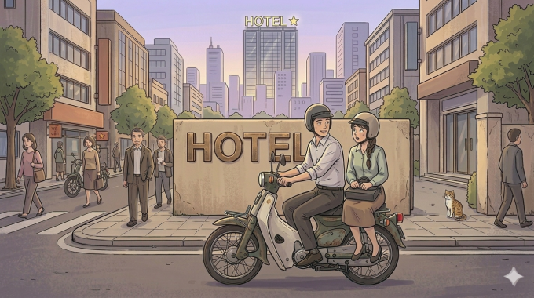

Mỹ – Iran đạt thỏa thuận về ngừng bắn, mở cửa eo biển Hormuz trong hai tuần
Mỹ và Iran đồng ý ngừng bắn trong hai tuần, Tehran sẽ cho phép tàu thuyền đi qua eo biển Hormuz trong thời gian này "với sự điều phối từ lực lượng vũ trăng".
Nhiều ý kiến trái chiều được đưa ra trước câu chuyện của người vợ làm trong môi trường công nghệ, vô tư đi nhờ xe đồng nghiệp nam về nhà trong một tối mưa rồi xảy ra mâu thuẫn với chồng. Có người cho rằng người chồng quá nhạy cảm và thiếu tin tưởng vợ, số khác lại nhìn nhận việc giữ khoảng cách với đồng nghiệp khác giới sau khi kết hôn là điều cần thiết. Câu chuyện không chỉ xoay quanh một chuyến đi nhờ xe mà còn chạm đến vấn đề ranh giới trong hôn nhân, sự ghen tuông và niềm tin giữa vợ chồng. Dưới đây là những chia sẻ đáng chú ý từ nhiều góc nhìn khác nhau.
Nam đồng nghiệp có vợ bảo 'vào khách sạn cho mát' khi tôi đi nhờ xe Có một lần tôi đi nhờ đồng nghiệp nam. Trên đường đi anh ấy tâm sự về cô vợ đoảng... Rồi anh ấy bảo muốn nói với tôi nhiều điều, thôi vào khách sạn nói chuyện cho mát, trời nắng quá. Tôi vô tư nói: nếu nắng thì vào quán em mời anh uống nước mát. Thế là anh ấy từ chối và đi tiếp về công ty. Tôi bô bô kể chuyện ông anh lười quá, đang chạy xe lại đòi vào khách sạn cho mát. Mấy cậu thanh niên tủm tỉm cười và nói với anh ấy là "chú chơi không đẹp nhé". Còn tôi không hiểu gì hết. Một cậu đồng nghiệp phía sau nói "chị ngây thơ quá, anh ấy rủ chị vào khách sạn để 'xử lý' chị". Câu chuyện này cách đây vài chục năm rồi. Giờ tôi "cáo" rồi nhé. (Anh Kim Anh)

Chồng nhờ nam đồng nghiệp đưa tôi về khi anh bận việc Bình luận của mọi người có bị nâng cao quan điểm quá không vậy? Năm năm kết hôn đi nhờ có một lần mà đánh giá nọ kia đủ đường thì tôi thật quá sợ. Môi trường tôi học đại học cho tới khi ra trường đi làm gần 20 năm tới giờ, cứ 10 người đàn ông chắc chỉ có hai người phụ nữ. Nên bạn bè, đồng nghiệp, khách hàng của tôi đều là đàn ông. Việc đi nhờ xe trong hoàn cảnh đó, tôi thấy quá sức bình thường. Tôi không như bạn tác giả đi có một lần, mà tôi đi hẳn vài lần. Chồng tôi hoàn toàn thoải mái với việc đó. Thậm chí thời gian còn làm cùng công ty với chồng, chồng không đưa tôi về được còn nhờ đồng nghiệp nam chung của hai vợ chồng chở tôi về. Ủa, vậy chứ có vấn đề gì mà làm quá lên thế? Vợ chồng tin tưởng ở nhân cách nhau chứ ghen bóng gió rồi cãi nhau này nọ thì một là anh ta gia trưởng, hai là xem lại có khi anh ta đang từ bụng mình suy ra bụng người đấy. (hoatuyet)

Mỹ và Iran đồng ý ngừng bắn trong hai tuần, Tehran sẽ cho phép tàu thuyền đi qua eo biển Hormuz trong thời gian này "với sự điều phối từ lực lượng vũ trăng".

Người dân Iran tập trung trên đường phố Tehran, vậy có và hô khẩu hiệu sau khi lệnh ngừng bắn hai tuần với Mỹ được công bố.

Nằm ở bộ nam eo biển Hormuz, cách Iran gần 34 km, bán đảo Musandam của Oman đang chứng kiến những hệ lụy về kinh tế và đời sống khi xung đột bùng phát.